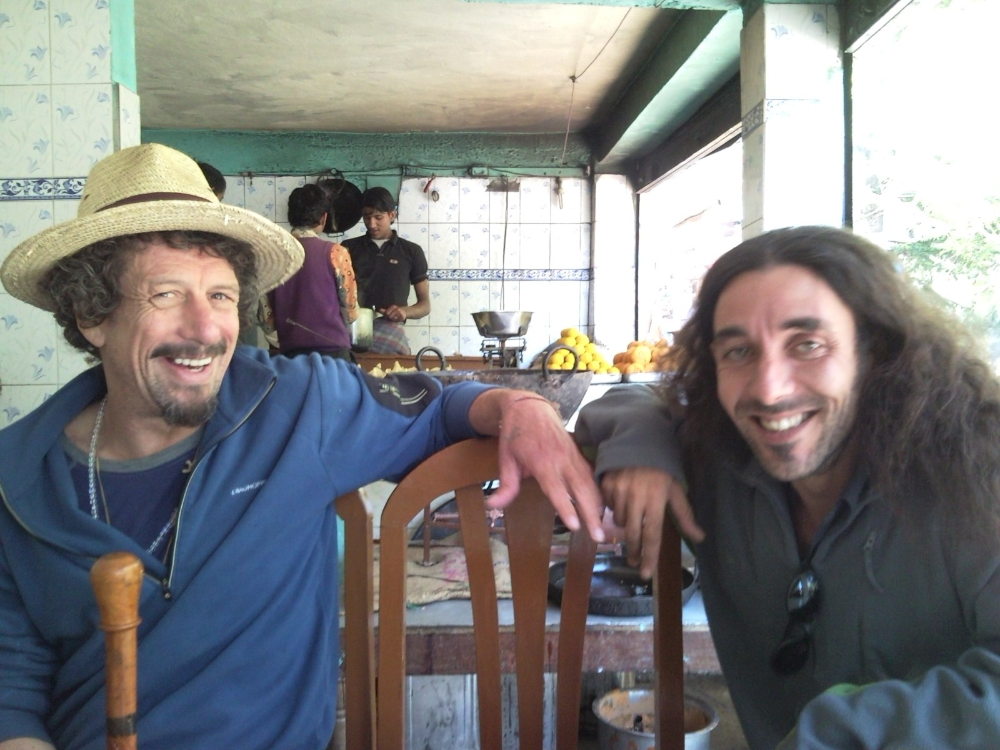
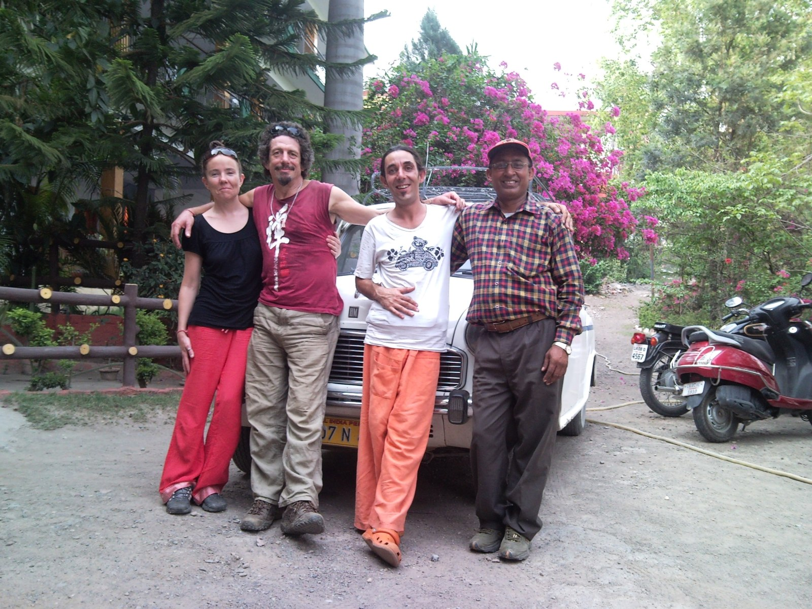

2011¶
Escaping to India¶
- After the devastating experience with Mike Wenham which heralded the beginning of the nearly-complete destruction of my professional career as a developer, I realize I would benefit from an extended trip to India.
- I spend 6 months in India from March to September, then a month in Thailand before returning home.
What I did in India this year…
- I attend a Sivananda yoga teacher training course in Kerala.
- I then spend two weeks in Rishikesh at Parmarth Niketan on a yoga course, then go on to make the Char Dham pilgrimage by private car.
- I spend a month in Dharamsala doing Buddhist meditation practices, mainly Vipasana, then I return to Rishikesh for more intense yoga courses at Parmarth.
- After this I spend a few weeks at an ashram near Rishikesh run by a follower of Sri Aurobindo who is, thankfully, away traveling when I visit.
- I then do an Iyengar course in Dehradun at the Yog Ganga centre before heading to Thailand for fasting practices.
Gammadian¶
India¶
- After the devastating blow to my professional life and career from misogynist porn-addict and murderer Mike Wenham at British Telecom, I decided to spend 6 months in India.
- While I was deciding what to do in India, something made me sign up to Jitendra’s course online again.
- I believe this was online manipulation again, from the porn-gang hackers.
- I even sent him some money; about 400 euros.
- Something brings me to senses and makes me realize I’ve made a massive mistake, and I ask him to return the money.
- In Rishikesh in April, a man from London - Richard who calls himself Gammadian - comes with me when I get my money back from a very nervous Jitendra.
Meeting Richard¶
- I met Richard who calls himself Gammadian Freeman initially at a Tensegrity course in Barcelona in 2008.
- He made a beeline for me on the course, pushing his way in, as they do.
- Interestingly, an older woman got between us and distracted him, and he left me alone in Barcelona after that, but he had already got my contact details and so we stayed in touch a little on Facebook, etc.
- He texted me very unusually one time, at a significant moment in November or December 2010 while I was working for Mike Wenham and at the exact moment some horrible event occurred with regards to work.
- It surprised and alarmed me.
- Richard never texted me outside of a day we might have been meeting.
- I hadn’t heard from him for months on end and suddenly - perhaps after Mike has sent me a threatening missive - Richard texts me “BUM BUM Bhole”, a reference to Mahadev, but the orifice reference is way clearer.
- I think, at the time, he must be drunk.
- Now I wonder if this text was timed perfectly by hackers to trigger a memory of anal rape, at the same time as something evil is happening to me at the hands of Mike Wenham, with a person they’re setting up for a future sedating scam.
- Oh, the men of the most famous criminal porn studio in the world would never do anything like that… is an extremely naive and somewhat suicidal attitude.
- In London in early 2011, I attend a Tensegrity workshop in Finsbury Park.
- Richard is there; I think it was him who suggested I come.
- I tell him I’m traveling to India and he tells me he’s also going to India at the same time.
- I say we should meet up maybe.
- He agrees.
Rishikesh¶
- I meet Richard at Parmarth Niketan in April and we do the two-week yoga course.
- I’m finding Richard’s behavior a bit odd.
- Without my knowledge, he has told the guru at Parmarth that he’s a personal friend of the Dalai Lama.
- He’s exaggerating a connection his Cleargreen teachers had once with the Dalai Lama and he wasn’t even there!
- One of the residents tells me this in August when I return to the ashram.
Richard is pretending he is in love with me¶
- Richard appears to have assumed a romantic relationship with me.
- It’s news to me.
- He never once asked me if I was interested in him, or spoke to me about it at all.
- I was not giving him any signs apart from being friendly with him.
- Yet he is showing symptoms of being romantically interested in me, except, he’s not very convincing.
- It was very difficult to deal with, actually.
- Perhaps it was supposed to be.
- He got extremely rude and angry with me when it became obvious to him I wasn’t interested; or perhaps that was the whole scam’s goal; a falling out, unpleasantness, to explain away any sudden-onset stress and anxiety.
- The following year while I’m suffering from severe and sudden-onset colitis, Richard’s Spanish mate Santiago from Madrid, another Cleargreen student I had met in Dénia, turned up in London also pretending he liked me, but didn’t.
- He was, apparently, studying at the University of Birmingham, or somewhere in the midlands, but I don’t know if this was true.
- I assumed it was the Spanish game of get the woman back who rejected your mate, but maybe it was more sinister.
- He wanted, very specifically, to visit Highgate cemetery for some reason, so I took him.
- I missed the Back to Black (porn-gang funeral meme) reference completely at the time but I was annoyed at him because I got a parking ticket at Euston station when I dropped him off that Saturday evening.
- Santiago was at one of Elke’s Tensegrity workshops in Dénia where I had met him (2008-2009), and had also likely been in attendance at another workshop she ran at the Hostal Loreto also attended by the dodgy geezer who may be one of the switcheroo trumpet teachers in 2013.
- It’s possible these two events in my mind were the same event; you could ask Elke if she hasn’t collapsed from exhaustion and poverty.
- Richard played a weird game of never revealing his intentions, keeping me wondering, and then suddenly buying me a gift out of the blue which I tried not to accept.
- Indeed, prior to buying me the gift he’d even tried the old love-triangle trick with a Polish woman at Parmarth on the same yoga course as us.
- But his heart wasn’t in it; he was a bad liar.
- I said; “I don’t deserve this”, after he passed me the necklace.
- I meant he shouldn’t have given me the gift, it was not deserved.
- He replied as if he was offended and my words meant that I thought he was too good for me.
- It was all very bizarre and contrived and very very unpleasant.
Char Dam yatra¶
- After the course, Richard and I go on the Char Dam pilgrimage.
- I had started to think about the pilgrimage during the course and didn’t really want to be traveling alone in wild-man North India.
- I ask Richard he if would like to accompany me and he agrees.
- We rent a taxi which drives us to Gangotri, Yamunotri, Kedarnath, and Badrinath over 11 days.
- It’s spectacular!
- He’s invited someone without asking me; his pothead mate.
- The two of them get high the whole trip.

- It’s embarrassing.
- They never ask the driver if it’s OK to smoke pot in the car, and the driver is too polite to complain.
The abomination of desolation in the holy place¶
- Could the stops on the Char Dham Yatra culminating at Rishikesh yet again be yet more of those holy places mentioned in Daniel and Matthew?
A Jitendra lookalike at Gangotri¶
- We first visit Gangotri.
- There is a lane of stalls heading up to the temple.
- A man who looks exactly like Jitendra Das, dress sense and all, is sitting on the side.
- At the time, I thought it was unusual.
- I now believe it was a set up.
- I now wonder how many times I was sedated and raped on that trip with Richard and his dodgy mate, filmed for a criminal-porn-subscriber audience, as usual.
Gammadian’s mate¶
- He was Italian with a British accent and a horrible pot addiction.
- He played the accordion like a Roma, and carried his instrument with him.
- He had those sad, Christian-icon eyes, just like Sandra Diaz.
- His hair was like Jitendra Das’s hair.
- He spoke about his underpants in a lascivious way, all the time.
- Why did Richard invite him along without asking me?
- He told us his nickname was Super Mario.
- He was very very short, not much taller than me.
- The man wasn’t even interested in spiritual matters, and was thoroughly bored with temples.
- He never entered any of the temples we visited; the purpose of our trip.
- It was totally unclear why he was with us, in fact.
- He was constantly complaining about spiritual practices like yoga and reiki, etc.
- He made a huge and repeated fuss about how useless they were, about how it was all just lies… then when we were alone one night he told me he was into the 11:11 thing and how good it was and how I must sign up.
- I told him, you have spent the whole week moaning about reiki, yoga, meditation, etc, and now you are recommending something totally off the wall?.
- He agreed, it didn’t make sense.
- What was the true purpose behind it?
- Is the
11:11thing a porn-gang lure? - In March 2026, I attend the yoga festival at Parmarth Niketan and there is a trumpet player, Ryan, who looks a lot like this man and could be his son.
- I start to wonder if Super Mario was a resident of India; a member of the honey-trapping Roma porn-gangs, ready to spring into action whenever needed.
- The trumpeter, ironically, seemed to be initiating a love-affair with a very vulnerable man at the festival.
Update May 2026
- Word on the street is… Super Mario is my friend now.
Spiking¶
- The night we returned to Rishikesh, we stayed in a guesthouse together for one night and parted ways the following morning.
- I may have been spiked that night.

- I had a very strange lucid dream about waking up on a bed in a forest and not knowing who I was.
- I had no identity; the whole story of “Katie” was missing, like an Alzheimer symptom.
- I told so many people about this dream because it related to yoga practice.
- However, I had the same dream at Carrer Furs, a lot; this lucid dream about being alone on a bed in the forest, and it was also the same dream I had in Lamai in July 2023 while fraternizing with Hala.
- I have to wonder if the relationship with Richard was a set up; just one year after the Jitendra Das affair which must have made the gangs millions in revenue.
- Santi’s future weird-ass role and the presence of a future switcheroo trumpet-teacher at one of Elke’s Tensegrity workshops, and the proximity of all events and everyone involved to criminal-porn capital of the world, Denia, make me wonder about what was really behind Richard’s bizarre behavior.
- I have to also wonder if whenever I dream the bed in the forest dream, it’s a signal of having been sedated.
- Did the last night I spent with those two consist in a “date”?
- Over the following weeks, I still saw them.
- They never spoke to me in that “after the event” way men can’t even look at you after they’ve raped you while sedated.
- Richard and I attended a Vipasana course soon after and we spoke a little afterwards.
- When he got out of meditation, he told me he was going to be a good boy and stop doing drugs.
- I told him he should meditate on: look what you made me do.
- He remained rude and offensive towards me.
- I remember telling him about PTSD reactions (I’d unusually - interestingly - had an extreme one while with him and some others one afternoon about a month after the Char Dham pilgrimage).
- He called me a trooper, which I thought was a curiously cold word to use after sharing something about sexual trauma.
Spiking-prep¶
- We’ve established a need for criminal pornographers to prepare a reason for a sedated-rape target to be upset that coincides with attacks and thus provides an explanation for sudden-onset anxiety and depression.
- The romantic relationship set-up had been a total disaster but even so, at the end of our trip, as we were heading back to Rishikesh, Richard and his mate started to be really nasty to me.
- For example, they ate all my dinner one night, leaving me with no food.
- Richard said offensive things to me, bare insults; old bag was a favorite which was a bit of a projection in my view.
- I was appalled by his behavior; not offended.
- At the time, of course, I thought he was upset because I wasn’t interested in him.
- But now I think that probably the whole narrative was for laying down explanations.
Colitis¶
- Typically, throughout my life, I have been emotionally and mentally tough and resilient.
- This has meant that the effects of trauma have caused me many unusual physical symptoms and autoimmune diseases rather than any out-of-the-ordinary stress and anxiety, or depression.
- I was perma-stressed and anxious anyway, since August 1989 and being targeted by the North London rape-gangs, and the PTSD was always peaked and couldn’t get any worse.
- I only suffered from depression after sedated incest.
- In 2011, just before I’m about to return to London from my travels in India and Thailand, I get colitis.
- I spend the next 18-months, until I do a colonic fast and detox, bleeding from my bottom every single day.
- It’s an autoimmune disease and trauma-related.
- It disappears literally overnight in October 2012, just before I return to live in Dénia.
- Did I suffer anal rape in India in 2011 without my knowledge?
- Is it possible the disease was being triggered and/or exacerbated by chip-level, sub-audio hacks plus social media manipulation and replays of such sedated anal-rape events?
Roberto from Alicante and Catalina¶
- While on yoga teacher training in Kerala I meet a Canadian woman, Catalina, whose mother is from Chile and her father Jewish.
- We become friends.
- Catalina is a psychotherapist and lives in Toronto, Canada.
- We are also both in Dharamsala in June doing Buddhist meditation retreats, and we reconnect there.
- She has met a man on her course from Alicante, Roberto, who does Iyengar yoga in the city and lives in Elche.
- They fall in love.
- She gets pregnant really quickly.
- They visited me in 2012 in Dénia at my apartment in Ramon Ortega.
- Something was off with them (him actually).
- I spent New Year’s with them in Elche in 2012 while I was working for Nokia.
- On New Year’s Eve, I mentioned to Catalina how I was struggling with child sexual abuse trauma.
- I wonder about this now… does this mean sedated rape had already begun at my apartment by New Year’s 2012 and I was traumatized by it and relating the consequent stress and anxiety to what I consciously knew about happening to me in 1989 - in the absence of any other explanation?
- I told them about my forest dream. I remember Roberto grinning as I told it.
- Roberto said some interesting things: one was how his ex-girlfriend had complained about him being a gypsy. He told us about that repeatedly.
- In December 2024, during prolonged online communication with international criminal gangs - unknown to me at the time also monitored by global law enforcement bodies - I noticed a man staying at the same hotel as me in Lamai who looked exactly like Roberto; he could have been a brother.
- At the time, it felt friendly, protective. I was high though.
- They were dropping each other in it, weren’t they, in an extraordinary manner.
- It’s astonishing.
- I tweeted about seeing him; although it may have been on a profile post because I cannot find the tweet now.
Yoga in Alicante¶
- Not sure I mentioned this before but I signed up for an Iyengar yoga class in Alicante in maybe April 2024, with Roberto’s teacher, a famous Iyengar teacher that everyone knows in Spain.
- He knew who I was, I could tell when I went to speak to him.
- He could hardly speak to me he looked so worried about me talking to him.
- Does Roberto show every man he knows the sedated-and-raped foreigners they target?
- Is Roberto a family member of the limping man at EthCC?
Hacked connections¶
- This makes me wonder if every woman I communicated with over the last three decades, and swapped numbers with, became a potential target?
- Or, was Roberto told about Katharine in Dharamsala, a woman who had done Sivananda YTT in Kerala (and been sedated-and-raped throughout India on pilgrimages and everywhere else in the world by apparently normal men and this had just begun and was going to get worse and worse - sex-slave apartment in preparation already…), and to make contact with her… and met Catalina instead?
- Do the porn gang’s professional psychotherapists understand that traumatized people tend to connect with other traumatized people?
- Is that why my friend who moved to France appears in the multiple targeted women I will see on my X UI in August 2024?
- It must be easy to jump into another persons devices, via a WhatsApp link or similar, and start monitoring them.
- I wonder if they look for:
- Early trauma (Catalina’s parents had divorced when she was little).
- Recent trauma.
- Wealth.
- Vulnerability levels (is she living alone, is there a boyfriend, husband, etc).
- Is anyone going to come to the rescue?
- If enough boxes are ticked, do they then move in and enslave?
- You don’t think sex work is actually supposed to be a paying job, do you?
- If I’m right that the porn gangs have been operational and efficient for half-a century, assuming 11-year-old Abid Khan wasn’t making up his descriptions of snuff-porn and other horrible things we should not have been hearing about at Holy Trinity primary school in East Finchley in 1983, and the experiences of women like Irene, especially in Spain, are more common than anyone can imagine, then where do you think these great minds that control the world might be leading us now…
- Certainly not to peace..
- Could the porn-gangs have become so bored of their evil business over many decades, they started targeting women who are challenges, such as myself with my links to international terrorism and everything that comes with that…
- Did this “challenging-women” approach become an online betting game.. together with “will the female-tech-colleague-you-hate commit suicide”?
- Isn’t this what we should expect from billions of porn-sick men who despise women and girls, and are totally controlled by criminal gangs who threaten to tell their mothers, employers, police, what they’ve been up to if they do not OBEY?
- One wonders what the porn gangs might ask of these poor sick men:
- Say something weird (and here are the exact words) to your sister at 12.30pm.
- Go out and make a weird face (description given) to a woman wearing red who you will see walking down the road in 10 minutes.
- Jump out into the middle of the road in 30 seconds in front of a (don’t worry, slow moving) black car and do a silly dance (make sure you’re wearing headphones).
- Give us 80% of your tech-start-up’s systems data processing power (funded continually by Western financiers) because the caliphate is paying us billions to get hold of it to use for their AI manipulation tech… (it’s bloody working too)…